MANUAL BOOK
Platform Pembelajaran Web Development & Coding Mobile-First
(Aplikasi Android Offline-First, Portal Fasilitator, Panel Super Admin & Verifikasi Sertifikat)
PENGENALAN SISTEM, ARSITEKTUR & SPESIFIKASI PLATFORM
CodeAcademy adalah ekosistem pembelajaran pemrograman Web Development mobile-first yang menggabungkan Aplikasi Mobile Android (Offline-First), Backend Cloud Firebase, dan Portal Web Multi-Peran (Halaman Publik, Portal Fasilitator, Panel Super Admin, dan Portal Verifikasi Sertifikat). Sistem ini dirancang agar mahasiswa maupun pembelajar pemula dapat belajar konsep hingga praktik menulis kode HTML, CSS, dan JavaScript langsung dari ponsel, sambil tetap terhubung dengan pendampingan fasilitator secara real-time di layar desktop.

Spesifikasi Arsitektur & Komponen Sistem:
| Komponen Platform | Teknologi Utama | Fungsi & Tanggung Jawab |
|---|---|---|
| Aplikasi Mobile (Android) | Kotlin, Jetpack Compose Material 3, Room Database v16, DataStore | Pembelajaran offline-first, Playground (Web Studio & JS Console), Kuis, Forum, Gamifikasi, AI Tutor Codi, 4 Bahasa |
| Autentikasi & Keamanan | Firebase Authentication (Email, Google Sign-In, Anonymous), firestore.rules |
Login siswa & staf, penautan akun tamu ke Google (linkWithCredential), pemantauan status Ban, validasi hak akses |
| Sinkronisasi Cloud | Cloud Firestore (Project codeacademy-6a361) |
Koleksi users, forum_posts, project_submissions, certificates, announcements, dan facilitators |
| Asisten AI | Direct Gemini REST API + Firebase AI Logic SDK (Google Gemini) | Tutor interaktif sadar konteks modul/kode dalam 4 bahasa (id, en, ja, zh) + fallback offline terlokalisasi |
| Web Portal Staf & Publik | HTML5, CSS3, Vanilla JS + Firebase Web SDK (public/) |
Landing page publik, Portal Fasilitator, Panel Super Admin, dan Portal Verifikasi verify.html |
Spesifikasi Kurikulum & Evaluasi Aktual:
| ID Kursus | Judul Kursus | Tingkat | Jumlah Modul | Kuis Bab | Proyek Akhir |
|---|---|---|---|---|---|
fe-web-foundation-00 |
Fondasi Web: Dari Nol ke Baris Kode Pertama | Orientasi | 106 Modul | 5 Kuis | Ya |
fe-css-02 |
CSS Layout Modern: Flexbox & Grid | Pemula-Menengah | 24 Modul | 2 Kuis | Ya |
fe-js-03 |
JavaScript Fundamentals | Pemula | 26 Modul | 2 Kuis | Ya |
| Total Kurikulum | Jalur Spesialisasi Front-End Web Development | Berjenjang | 156 Modul | 9 Kuis | 3 Proyek |
USE CASE DIAGRAM & MATRIKS HAK AKSES AKTOR
Sebelum masuk ke panduan operasional layar, diagram berikut memetakan interaksi seluruh aktor dalam ekosistem CodeAcademy (Aplikasi Mobile Android dan Portal Web):
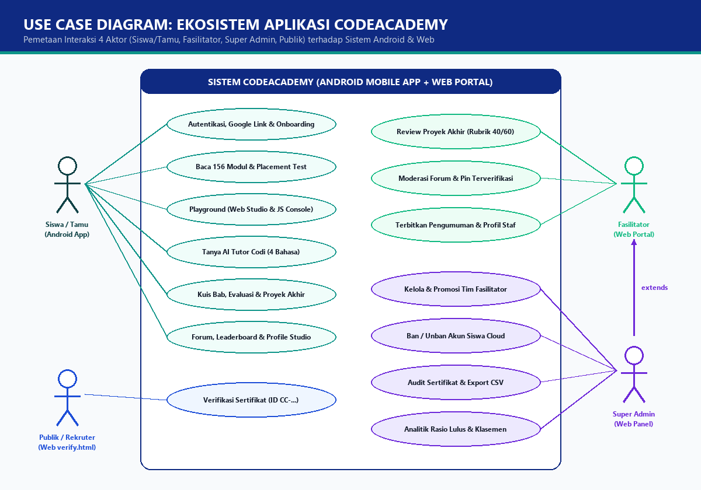
Matriks Peran & Hak Akses Aktor:
| Aktor | Platform | Hak Akses & Use Case Utama |
|---|---|---|
| Siswa Terdaftar & Tamu | Android App | Registrasi/Login/Google Link, Onboarding 4 langkah, membaca 156 modul, Placement Test, Playground (Web Studio & JS Console), AI Tutor Codi, Kuis Bab & Evaluasi Akhir, Pengumpulan Proyek Akhir, Forum Diskusi, Leaderboard, Profile Studio, 4 Bahasa, dan Sertifikat Digital. |
Fasilitator (accessRole: "facilitator") |
Web Portal | Login Firebase Auth terverifikasi /facilitators/{email}, meninjau antrean Proyek Akhir dengan rubrik (40% Kuis + 60% Proyek), menerbitkan sertifikat CC-... atau meminta revisi, menjawab & mem-pin Jawaban Terverifikasi di Forum, mengirim Pengumuman kelas, dan mengelola Profil Staf (tersinkron ke users/{uid}). |
Super Admin (accessRole: "super_admin") |
Web Panel | Mewarisi seluruh hak akses Fasilitator ditambah manajemen Tim Fasilitator (tambah staf, promosi Facilitator → Super Admin dengan perlindungan sesama Super Admin), Ban / Unban Akun Siswa, Audit & Pencabutan Sertifikat, Analitik, serta Export CSV. |
| Publik / Penguji / Rekruter | Web (verify.html) |
Memeriksa keaslian ID Kredensial Sertifikat CC-... secara langsung ke Firestore tanpa login, serta membaca/mengunduh Manual Book. |
FLOWCHART SISTEM & ARSITEKTUR ALUR APLIKASI MOBILE
Bagian ini mendokumentasikan alur logika internal aplikasi CodeAcademy Mobile secara menyeluruh—mulai dari gerbang masuk (gatekeeping), siklus belajar & evaluasi, hingga sinkronisasi data lokal-cloud serta hierarki tampilan profil antar peran.
3.1 Flowchart Navigasi & Gatekeeping Aplikasi
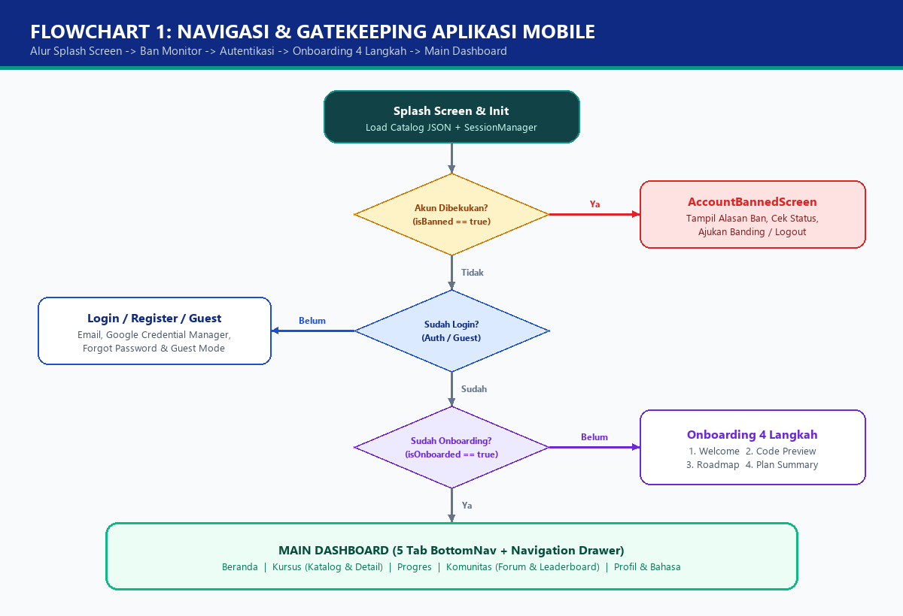
front-end.json) serta membaca preferensi sesi (SessionManager DataStore) dan bahasa aktif (id, en, ja, zh).isBanned akun pada Cloud Firestore (users/{uid}). Jika akun dibekukan oleh Super Admin, pengguna langsung diarahkan ke AccountBannedScreen (menampilkan alasan pembekuan, tombol periksa status ulang, ajukan banding via email, dan keluar akun).LoginScreen / RegisterScreen / Masuk Tamu. Pengguna baru yang belum menyelesaikan pengenalan (isOnboarded == false) melewati Onboarding 4 Langkah sebelum masuk ke Main Dashboard (5 Tab BottomNav + Navigation Drawer).3.2 Flowchart Siklus Belajar, Kuis & Penerbitan Sertifikat
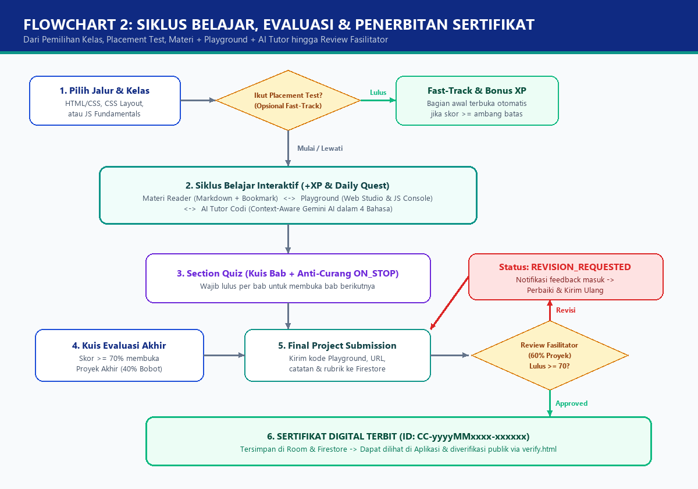
ON_STOP), dilanjutkan Kuis Evaluasi Akhir (syarat lulus ≥ 70%) untuk membuka Final Project Submission.REVISION_REQUESTED, siswa menerima notifikasi terlokalisasi untuk memperbaiki dan mengirim ulang; jika APPROVED (≥ 70), sertifikat digital CC-... diterbitkan ke Room & Firestore.3.3 Flowchart Data Offline-First, Isolasi Akun & Hierarki Profil
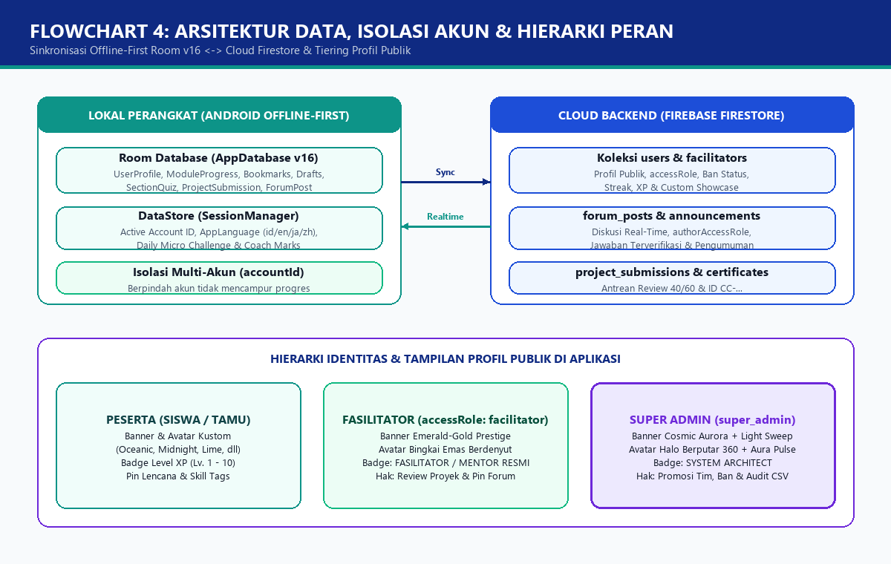
- Isolasi Multi-Akun (
accountId): Seluruh progres modul, bookmark, draf Playground, dan riwayat kuis di Room Database (AppDatabase v16) diisolasi peraccountIdsehingga pergantian akun tidak pernah mencampur data belajar. - Hierarki Identitas Profil Publik (
UserPublicProfileDialog& Forum): - Peserta (Siswa/Tamu): Menampilkan banner & avatar kustom pilihan pengguna (Profile Studio), level XP (Lv. 1–10), pin lencana, dan skill tags.
- Fasilitator (
accessRole: "facilitator"): Menampilkan tema Emerald-Gold Prestige, bingkai avatar berdenyut lembut, lencanaMENTOR RESMI, dan badgeFASILITATORdi Forum. - Super Admin (
accessRole: "super_admin"): Menampilkan animasi looping bertingkat—banner Cosmic Aurora dengan diagonal holographic light sweep, avatar dengan rotating sweep halo ring 360° dan pulsing cosmic aura, lencanaSYSTEM ARCHITECT, serta badgeSUPER ADMINberkilau di Forum.
USER FLOW END-TO-END APLIKASI CODEACADEMY
Diagram berikut merangkum perjalanan pengalaman pengguna (User Flow) dari pertama kali membuka aplikasi hingga meraih sertifikat digital terverifikasi:
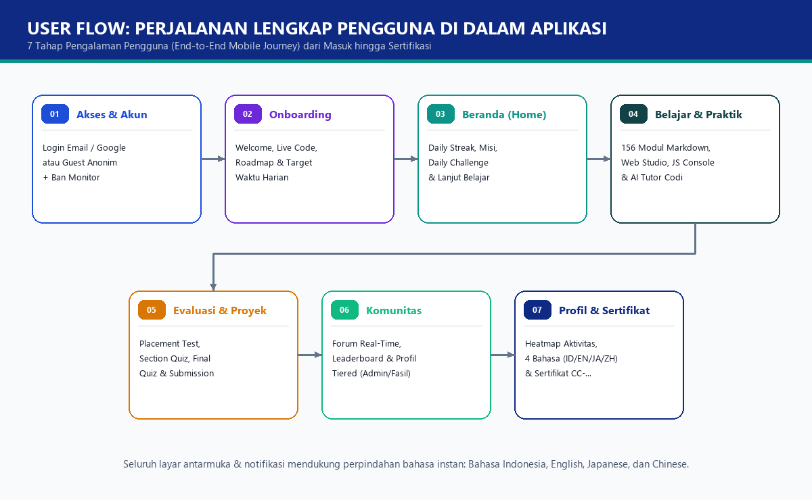
Rincian Matriks User Flow per Layar Aplikasi:
| Tahap | Layar / Fitur | Aksi Pengguna | Respons Sistem & Output |
|---|---|---|---|
| 1 | Splash & Auth (Login, Register, ForgotPassword, AccountBanned) |
Masuk via Email, Google Credential Manager, atau Tamu | Validasi sesi, link credential jika Tamu → Google, cek status Ban Firestore |
| 2 | Onboarding (Welcome, CodePreview, Roadmap, PlanSummary) |
Coba preset live HTML/CSS & pilih target menit harian | Simpan preferensi belajar ke Room & DataStore (isOnboarded = true) |
| 3 | Beranda & Navigasi (Home, Drawer, Search, Bookmarks, Notifications) |
Cek streak, misi harian, tantangan kode kilat, atau cari modul | Tambah XP harian, buka modul tersimpan, tampilkan notifikasi sesuai bahasa aktif |
| 4 | Belajar & Praktik (CourseCatalog, ClassDetail, Materi, Playground, AiTutor) |
Baca modul Markdown, jalankan HTML/CSS/JS di Web Studio / JS Console, tanya Codi | Auto-save draf kode, eksekusi sandbox terisolasi, hint kontekstual dari Gemini AI |
| 5 | Evaluasi & Proyek (PlacementTest, SectionQuiz, HasilEvaluasi, FinalProject) |
Kerjakan kuis bab/akhir & kirim kode + rubrik Proyek Akhir | Hitung skor, buka kunci bab/proyek, kirim antrean review ke Cloud Firestore |
| 6 | Komunitas & Sosial (Community, CourseForum, UserPublicProfileDialog) |
Buat topik/balasan forum, lihat Leaderboard & klik profil pengguna | Sinkron real-time Firestore, tampilkan profil unik Peserta / Fasilitator / Super Admin |
| 7 | Progres, Profil & Sertifikat (Progress, Profile, CertificateList, Certificate) |
Kustomisasi Profile Studio, ubah bahasa (ID/EN/JA/ZH), & bagikan sertifikat CC-... |
Update konfigurasi bahasa instan, tampilkan sertifikat & tautan verify.html |
UNDUH & INSTALASI APLIKASI VERSI MOBILE (ANDROID)
Spesifikasi Kebutuhan Sistem Minimum:
- Sistem Operasi: Android 7.0 (Nougat) atau versi yang lebih baru (
minSdk = 24,targetSdk = 36). - Memori RAM: Minimal 2 GB (disarankan 4 GB atau lebih agar rendering WebView Live Preview di Playground berjalan mulus).
- Ruang Penyimpanan Kosong: Minimal 150 MB untuk aplikasi, Room Database, dan cache materi offline.
- Koneksi Jaringan: Materi inti dapat dibaca offline; internet aktif diperlukan untuk AI Tutor Codi, sinkronisasi Google, Forum real-time, Leaderboard, dan pengumpulan Proyek Akhir.
- Dukungan Bahasa Aplikasi: Seluruh antarmuka UI, notifikasi, dan AI Tutor tersedia dalam 4 bahasa: Bahasa Indonesia, English, 日本語 (Jepang), dan 中文 (Mandarin).
Langkah-Langkah Pemasangan (Instalasi APK):
CodeAcademy-v1.0-release.apk (atau app-debug.apk untuk pengujian) dari repositori resmi proyek.
Keterangan Gambar:
- [1] Tombol Instal: Ketuk tombol ini untuk mengonfirmasi pemasangan berkas aplikasi CodeAcademy ke perangkat Android Anda.
PENDAFTARAN AKUN, MASUK, GOOGLE LINKING & STATUS AKUN
Untuk menyinkronkan poin XP, streak harian, riwayat forum, dan sertifikat kelulusan ke Cloud Firestore, pengguna disarankan masuk menggunakan akun terdaftar atau Google Sign-In. Aplikasi juga mendukung Masuk sebagai Tamu (autentikasi anonim) yang nantinya dapat ditautkan ke akun Google tanpa kehilangan progres maupun membuat akun ganda di Papan Peringkat.
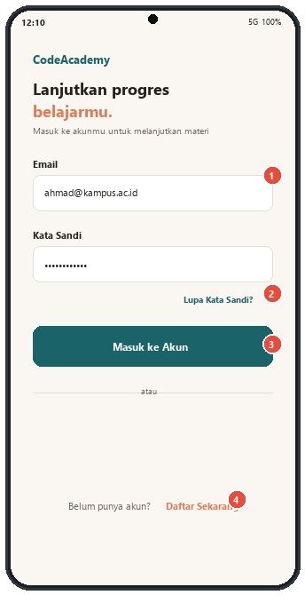

Langkah Masuk Akun (Login — Gambar 6A):
AccountBannedScreen): Jika akun melanggar aturan dan dibekukan oleh Super Admin, sistem menampilkan layar pembekuan lengkap dengan alasan, tanggal pembekuan, tombol Periksa Status Ulang, Ajukan Banding via Email, dan Keluar & Ganti Akun.Langkah Pendaftaran Akun Baru (Register — Gambar 6B):
ALUR ONBOARDING SISWA BARU (4 LANGKAH)
Pengguna baru disambut alur Onboarding Interaktif 4 Langkah untuk mengenal ekosistem belajar, mencoba perubahan kode secara langsung, dan menentukan ritme belajar harian sebelum masuk ke Beranda:
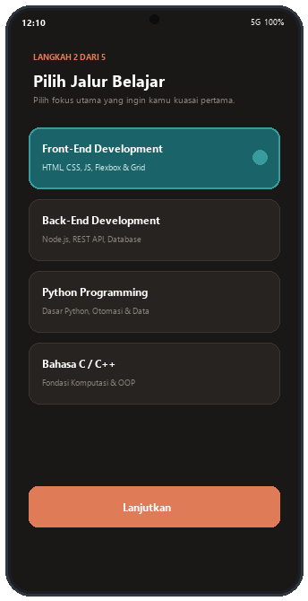
Rincian 4 Tahapan Onboarding:
| Langkah | Nama Tahap | Fungsi & Aksi Pengguna |
|---|---|---|
| 01 | Welcome Step | Sambutan bersama maskot Codi serta pengenalan 3 pilar utama: 156 modul terstruktur, Playground & AI Tutor terintegrasi, serta penilaian Fasilitator & sertifikat online. |
| 02 | Code Preview Step | Simulasi interaktif mengubah preset HTML & CSS (Judul Utama, Tema Teal, Tambah Tombol) dan melihat Pratinjau Live terbarui seketika. |
| 03 | Roadmap Step | Peta perjalanan kurikulum berjenjang dari Tahap 01 (Fondasi Web) → Tahap 02 (CSS Layout) → Tahap 03 (JS Fundamentals) → Tahap 04 (Proyek Akhir & Sertifikat). |
| 04 | Plan Summary Step | Penentuan target komitmen belajar harian (10–45 menit/hari: Santai, Ideal, Serius, Intensif), pilihan tujuan utama, dan estimasi hari selesai kursus pertama. |
BERANDA (HOME DASHBOARD), STREAK, MISI & TANTANGAN KILAT
Beranda merupakan pusat kendali belajar harian yang merangkum status streak, capaian XP, tips harian Codi, kuis kilat 1 menit, misi harian, dan pintasan kursus aktif.

Alur & Komponen Utama Beranda:
196 dp) [3]: Geser 3 kartu utama: (a) Banner Promo Mobile-First Coding, (b) Kartu XP Minggu Ini lengkap dengan animasi count-up, level aktif, dan target 250 XP, serta (c) Kartu Rekomendasi Kursus.- Codi Daily Tip: Tips pemrograman harian lengkap dengan tombol Tanya AI dan Coba Kode.
- Tantangan Kilat 1 Menit (+15 XP): Soal harian pilihan ganda berlabel badge A / B / C dengan penjelasan pembahasan dan proteksi 1x per hari (
yyyy-MM-dd).
MENU SAMPING (DRAWER), PENCARIAN GLOBAL & TERSIMPAN


Langkah Menggunakan Menu Samping & Pencarian:
"Flexbox", "Semantic", atau "Promise") untuk menelusuri seluruh 156 modul secara instan.KATALOG KURSUS, PLACEMENT TEST & DETAIL SILABUS

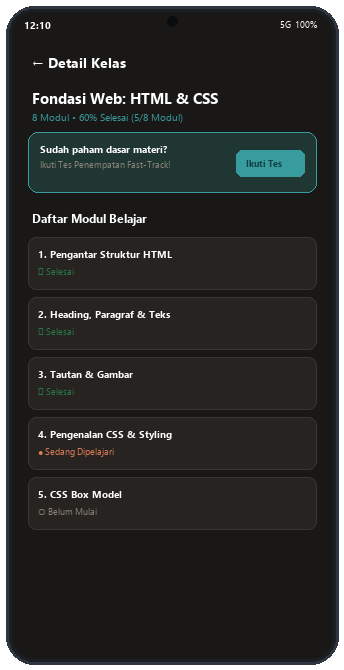
Fitur & Cara Menggunakan Menu Kursus:
X/Y Modul), progress bar proporsional, durasi belajar, ikon bookmark, serta tombol aksi Mulai, Lanjutkan, atau Ulangi.PEMBELAJARAN INTERAKTIF (MATERI READER)
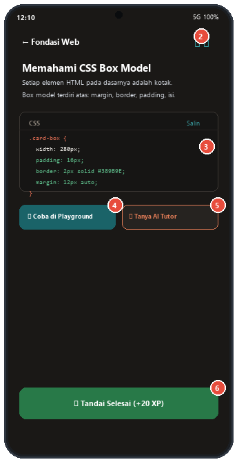
Cara Belajar Menggunakan Materi Reader:
PLAYGROUND INTERAKTIF (WEB STUDIO & JS CONSOLE)

Alur Penggunaan Live Code Sandbox:
- Web Studio: Tab berkas
index.html,style.css, danscript.jslengkap dengan line numbers gutter, syntax highlighting, dan auto-save per kursus. Ketuk Jalankan Kode / Preview Web untuk merender halaman web secara real-time di WebView terisolasi (sandbox://preview). - JS Console: Editor khusus
script.js(ES6) dengan terminal konsol permanen di bagian bawah. Ketuk Jalankan JS untuk mengeksekusi JavaScript secara headless (tanpa kilatan WebView) dan melihat outputconsole.log,[Warn], serta[Error]yang dapat disalin (selectable).
FITUR AI TUTOR CERDAS (CODI — GOOGLE GEMINI AI)

Kemampuan & Cara Menggunakan AI Tutor Codi:
id, en, ja, zh) baik saat terhubung ke model Gemini 2.5 Flash maupun saat offline fallback (ID/EN).imePadding) dan menggulir ke pesan terbaru.SISTEM EVALUASI, KUIS BAB & EVALUASI AKHIR

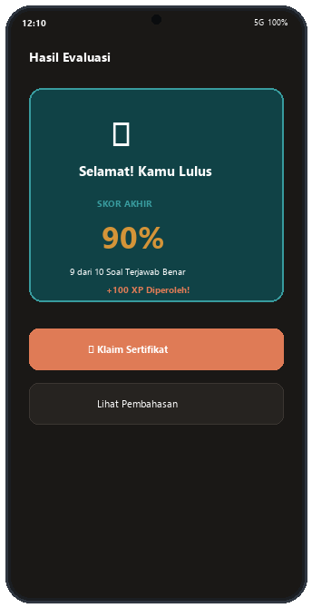
Aturan & Alur Pengerjaan Evaluasi:
ON_STOP) dan 1 Evaluasi Akhir berwaktu sebelum pengumpulan Proyek Akhir.PENGUMPULAN TUGAS AKHIR (FINAL PROJECT SUBMISSION)

Langkah Mengumpulkan Proyek Akhir:
project_submissions di Cloud Firestore dengan status awal PENDING_REVIEW.REVISION_REQUESTED: baca catatan perbaikan dari Fasilitator, perbaiki kode, lalu kirim ulang (resubmit).APPROVED: sertifikat digital ber-IDCC-...otomatis aktif di layar Sertifikat.
FORUM DISKUSI REAL-TIME, TARGETED REPLY & BADGE STAF

Fitur & Alur Diskusi di Aplikasi Android:
forum_posts Firestore.SUPER ADMIN: Badge berkilau shimmer kosmik-emas.FASILITATOR: Badge Emerald-Gold terverifikasi.
- Ketuk pill jumlah balasan untuk memperluas daftar komentar lengkap dengan Quote Box kutipan target balasan dan waktu relatif terlokalisasi.
- Ketuk Balas pada topik utama maupun komentar tertentu untuk memunculkan banner "Membalas @Nama" (batas 4000 karakter + proteksi timeout jaringan).
PROGRES BELAJAR, PAPAN PERINGKAT & SERTIFIKAT DIGITAL

Rincian Progres, Leaderboard & Sertifikat:
- Filter periode (Mingguan, Bulanan, Sepanjang Waktu, Streak 🔥) dan filter Jalur.
- Podium Top 3 Simetris & Bar Peringkat Pribadi ("Kamu") beserta selisih poin ke peringkat di atasnya.
- Ketuk baris pengguna mana pun (termasuk di Forum) untuk membuka Dialog Profil Publik dengan tampilan unik sesuai peran (Peserta, Fasilitator, atau Super Admin).
CC-...) & Berbagi Tautan Verifikasi: Menampilkan nilai akhir gabungan (40% Kuis + 60% Proyek), predikat kelulusan, nomor kredensial unik, tombol Salin ID, dan tombol Bagikan berisi tautan langsung ke Portal Verifikasi Web (verify.html?id=CC-...).PROFIL PENGGUNA, PROFILE STUDIO, BAHASA & ZONA BERBAHAYA

Fitur Lengkap Halaman Profil:
HAPUS atau DELETE untuk membersihkan data lokal Room, DataStore, serta dokumen users/{uid} di Firestore secara permanen.HALAMAN PUBLIK WEB & PORTAL WEB FASILITATOR
Halaman utama web (https://ivhan9867.github.io/codeacademy-web/) berperan sebagai Portal Publik yang memuat ringkasan platform, tautan baca/unduh Manual Book, pintasan Verifikasi Sertifikat (verify.html), serta pintu masuk terpisah ke Portal Staf (facilitator/index.html).

Alur Kerja & Fitur Fasilitator (accessRole: "facilitator"):
● Live Firebase): Masuk dengan Email/Password atau Masuk dengan Google via Firebase Auth; sistem memverifikasi dokumen /facilitators/{email} di Firestore dan otomatis menyinkronkan profil publik staf ke /users/{uid} beserta accessRole agar tampil unik di aplikasi Android./facilitators/{email} dan /users/{uid}).sandbox="allow-scripts"), isi rubrik/skor (0–100), lalu pilih Minta Revisi atau Setujui & Terbitkan (otomatis menulis sertifikat CC-... ke Firestore).authorAccessRole), Pin Jawaban Terverifikasi (📌), Tandai Membantu (💡), serta terbitkan Pengumuman Kelas real-time ke aplikasi Android.PANEL SUPER ADMIN: PROMOSI TIM, BAN SISWA & EXPORT CSV
Akun staf dengan accessRole: "super_admin" pada /facilitators/{email} otomatis memperoleh lencana 👑 Super Admin di navbar serta akses ke grup menu Panel Super Admin di Sidebar Workspace.
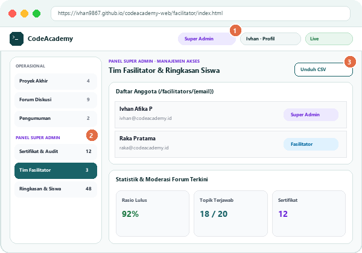
Modul Khusus Super Admin [1][2][3]:
/facilitators/{email}):- Menambah akun email Google baru sebagai Fasilitator atau Super Admin.
- Promosi Peran (
⬆ Jadikan Super Admin): Super Admin dapat menaikkan anggota berstatusfacilitatormenjadisuper_admindengan dialog konfirmasi. - Perlindungan Sesama Super Admin: Akun yang sudah berstatus
super_adminberlabel Dilindungi dan tidak dapat diturunkan (demote) maupun dicabut aksesnya oleh sesama Super Admin.
/users):- Memantau Rasio Lulus Proyek (%), Topik Forum Terverifikasi, Total Sertifikat Terbit, dan Jumlah Siswa Cloud (termasuk status Ban).
- Ban / Unban Akun Siswa: Super Admin dapat membekukan akun siswa yang melanggar aturan beserta alasannya (langsung memicu
AccountBannedScreendi Android) atau mencabut pembekuan (Unban) kapan saja.
codeacademy-sertifikat.csv dan codeacademy-nilai-proyek.csv.PORTAL VERIFIKASI SERTIFIKAT PUBLIK & KEAMANAN `firestore.rules`
CodeAcademy menyediakan Portal Verifikasi Kredensial Publik di https://ivhan9867.github.io/codeacademy-web/verify.html (public/verify.html) yang melakukan validasi langsung ke Cloud Firestore (certificates/{certId}) tanpa data dummy/demo lokal.

Cara Validasi & Ringkasan Keamanan firestore.rules:
CC-...): Masukkan ID Kredensial pada kolom pencarian atau buka langsung tautan bagikan dari aplikasi (verify.html?id=CC-...). Sertifikat valid menampilkan lencana hijau ✓ KREDENSIAL TERVERIFIKASI, nama lulusan, kursus, nilai akhir (40% Kuis + 60% Proyek), predikat, tanggal terbit, dan penilai.firestore.rules:/facilitators/{email}: HanyaisSuperAdmin()yang dapat membaca daftar penuh, menambah, mempromosikan, atau menghapus anggota tim; fasilitator biasa hanya dapat membaca/memperbarui profilnya sendiri tanpa mengubahaccessRole./users/{userId}: Dapat dibaca oleh pengguna login (untuk Leaderboard & Profil Publik); hanya pemilik dokumen atauisSuperAdmin()yang dapat menulis, dan fieldisBanned,banReason,bannedAt,bannedByhanya boleh diubah olehisSuperAdmin()./project_submissions/{id}: Siswa hanya dapat mengajukan statusPENDING_REVIEW; skor & keputusan review hanya boleh ditulis olehisFacilitator()./forum_posts/{postId}: Siswa tidak dapat memalsukan flagisMentor/authorIsMentor; fasilitator berhak memoderasi, menghapus, dan mem-pin jawaban terverifikasi./certificates/{certId}&/announcements/{id}: Terbuka dibaca publik/aplikasi, sementara penulisan/pencabutan dijaga ketat oleh aturan validasi skor (70–100) dan peranisFacilitator().
Informasi Dokumen:
- Platform: CodeAcademy Mobile (Android) & Web Portal (Publik, Fasilitator, Super Admin, Verifikasi)
- Basis Konten: Kode Sumber Terkini (
AppDatabase v16, 4 Bahasa,156 Modul/3 Kursus Front-End) - Template Dokumen: Pengembangan Bahan Ajar Edisi I 2026
- Tahun Pembuatan: 2026